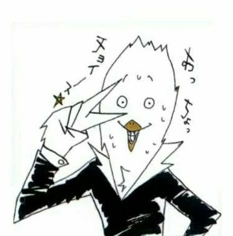

Haikyu!! is a sports manga series that was written from February 2012 to July 2020 and was later adapted into an anime. It was written and illustrated by Haruichi Furudate, and serialized weekly in Shueisha’s magazine Weekly Shōnen Jump. Besides anime, Haikyu!! had also been adapted into stage plays and video games. Four OVAs and compilation films have also been released. An upcoming movie is set to be released next February this year (2024).
Haikyuu
Table of Contents
Summary
After watching a volleyball game on TV, Hinata Shōyō, despite being short, dreamed of becoming a great volleyball player and the next “Little Giant”. He was able to play one match in middle school, but he and his inexperienced team from Yukigaoka Middle School were utterly defeated by the “King of The Court”, the setter Kageyama Tobio, from the powerhouse school, Kitagawa Daiichi Middle School. Hinata, in tears, then vowed to defeat Kageyama one day.
Hinata entered Karasuno High School because this was where the original Little Giant played. Hinata joined the volleyball team, but to his surprise, Kageyama also entered Karasuno and is now his teammate. The two fought constantly (to the point of almost being kicked out), but they worked together to become a powerful duo. Throughout Season 1, other characters are also introduced, such as the stingy first-years Tsukishima Kei and Yamaguchi Tadashi, the noisy (but powerful) Tanaka Ryuunosuke and Nishinoya Yuu, the dependable third-years Sugawara Koushi, Sawamura Daichi, and Azumane Asahi, and the other (not-as-loud) second-years Ennoshita Chikara, Narita Kazuhiko, and Kinoshita Hisashi. The Karasuno team also plays with other teams such as Nekoma, Karasuno’s supposed rivals, and Aoba Johsai, a strong, powerhouse school where some of Kageyama’s old schoolmates are.
After suffering defeat from the match with Aoba Johsai, Karasuno decides to get better and stronger by joining a summer training camp with other strong high schools like Fukurodani, Shinzen, and Ubugawa. Karasuno also practiced with their rival school, Nekoma. Here, Kageyama and Hinata improved their duo attack (though with some fighting and hardships). Many other players also developed their volleyball skills— Tsukishima learned blocking tips from Bokuto Kōtarō and Akaashi Keiji, Yamaguchi learned how to do a jump float serve from Shimada, etc. Karasuno also learned different volleyball techniques and tricks. After training, Karasuno enters the Miyagi Prefectural Qualifiers for the Spring tournament. After defeating all teams (including Aoba Johsai), Karasuno advances to the finals to defeat Shiratorizawa, the strongest volleyball school in Miyagi Prefecture.
In the span of 10 episodes, Karasuno plays against Shiratorizawa and its monstrous players. They need to defeat Shiratorizawa star hitter, Ushijima Wakatoshi (who Hinata and Kageyama met when they spied on Shiratorizawa). Besides him, Karasuno had to defeat the monster blocker, Tendo Satoru. Among others, Tanaka’s sister and Tsukishima’s brother watch the event. Many eventful things happened— Nishinoya was able to receive Ushijima’s powerful spike in three tries, Tsukishima had blocked Ushijima’s spike (and had his fingers injured after a while), Hinata and Kageyama were able to get past Shiratorizawa’s blockers, and more. After a tiring, 5-set match, Karasuno unexpectedly wins and advances to the Spring National Tournament to be held in Tokyo.
After defeating Shiratorizawa, Karasuno continues to train for Nationals. However, some players practiced at other places— Kageyama joined the All-Japan Youth Camp with other skilled players in Japan (Sakusa Kiyoomi, Miya twins, Hoshiumi Korai, etc.), and Tsukishima joined the Shiratorizawa First-Year Training Camp with Shiratorizawa’s Goshiki Tsutomu and Date Kou’s Koganegawa Kanji. Jealous and power-hungry, Hinata sneaks into Tsukishima’s training camp (even if he didn’t get an invite). Shiratorizawa’s coach doesn’t let him train and makes Hinata be a ball boy, and Hinata suffers the consequences. However, through observing, he still grew and learned many things from the training camp. He was still able to join some training sessions at the end thanks to Tsukishima.
Meanwhile, Kageyama enjoys his training in Tokyo with other strong players, but has a hard time with Miya Atsumu, a setter from Inarizaki High School since Miya called him a “Goody Two-Shoes”. When the three players came back, they all changed for the better. Kageyama also started teaching Hinata how to jump higher since Kageyama was inspired by Hoshiumi’s jumps. Afterwards, Karasuno travels to Tokyo to compete in Nationals. After settling down, Hinata encounters a problem— he forgot his volleyball shoes. This causes Kiyoko Shimizu (Karasuno’s manager) to remember her track-and-run days while getting Hinata’s shoes. Thus, the competition begins. Karasuno’s first match is with Tsubakihara High School. Karasuno wins and survives the first day. On the second day, Karasuno competes against Inarizaki High School, which Miya Atsumu plays for.
Karasuno shocks Inarizaki with Hinata and Kageyama’s quick set. Though temporarily fazed, Inarizaki continues being a strong opponent to Karasuno. Both the Miya twins are almost as talented as Kageyama (they were even able to copy Hinata & Kageyama’s quick attack), and Suna Rintarou’s blocks have a very wide range. Aran Ojiro’s spikes are also strong. Nevertheless, Karasuno emerged victorious— Hinata made his first proper receive, Tanaka overcame his doubts, etc. After winning the game against Inarizaki, Karasuno will then play against Nekoma, marking the first official “Battle of The Garbage Dump”.
Important Characters
First-Years:
- Hinata Shoyo - the short & energetic main character of Haikyu!!
- Kageyama Tobio - Hinata's setter
- Tsukishima Kei - stingy & tall middle blocker
- Yamaguchi Tadashi - Tsukishima's best friend; jump float pinch server
Second-Years:
- Nishinoya Yuu - Karasuno's loud libero
- Tanaka Ryuunosuke - Noya's good friend; loud senior who likes Karasuno's manager
Third-Years
- Sawamura Daichi - team captain
- Sugawara Koushi - smart and caring senior & vice-captain; comparable to a mother
- Asahi Azumane - Karasuno's ace who is a friendly giant
Others:
- Shimizu Kiyoko - Karasuno's beautiful manager who used to be a track and field team member
- Yachi Hitoka - Karasuno's junior manager who is artsy and sometimes anxious
- Ukai Keishin - grandson of Ikkei Ukai, Karasuno's famous old coach; current coach of Karasuno
- Takeda Ittetsu - supportive faculty adviser and head coach
First-Years:
- Kunimi Akira - Kageyama's old teammate; was invited to Shiratorizawa's training camp
- Kindaichi - also Kageyama's old teammate and was also invited to Shiratorizawa's training camp; "Turnip Head"
Second-Years:
- Yahaba Shigeru - pinch server and setter
- Watari Shinji - Seijoh's bald libero
- Kyotani Kentaro - scary spiker who admires Iwaizumi
Third-Years
- Oikawa Tooru - "Great King"; Kageyama's old senpai whom he fears; Seijoh's team captain
- Iwaizumi Hajime - Oikawa's best friend and Seijoh's ace
- Matsukawa Issei - middle blocker; his blocks scared Hinata
- Hanamaki Takahiro - pink-haired wing spiker
First-Years:
- Haiba Lev - tall, half-Russian middle blocker; beginner at volleyball; friends w/ Hinata and mentored by Kuroo
- Inuoka Sou - Hinata's friend; middle blocker
- Shibayama Yuki - Nekoma's shortest player; libero
- Tamahiko Teshiro - pinch server
Second-Years:
- Kozume Kenma - Hinata's good friend; Nekoma's cunning and gamer setter
- Yamamoto Taketora - Nekoma's Tanaka; passionate & energetic spiker
- Fukunaga Shohei - Nekoma's comedian spiker
Third-Years
- Kuroo Tetsuroo - Nekoma's captain; best friends w/ Kenma; taught Lev, Tsukishima, and Hinata how to block
- Kai Nobuyuki - Nekoma's vice-captain and wing spiker
- Yaku Morisuke - hardworking & caring libero who likes to lightheartedly clash w/ his juniors
First-Years:
- Goshiki Tsutomu - invited to Shiratorizawa's training camp; ambitious and passionate wing spiker w/ straight bangs
- Shibata Yu
- Akakura Kai
Second-Years:
- Shirabu Kenjiro - Shiratorizawa's easily-annoyed setter; admires Ushijima; dislikes Goshiki
- Kawanishi Taichi
- Yunohama
- Umeda
Third-Years
- Ushijima Wakatoshi - captain & ace; Oikawa's enemy; one of Japan's top 3 spikers
- Tendo Satori - "Guess Blocker"; good friends / Ushijima
- Soekawa Jin - vice captain
- Semi Eita - pinch server
- Ohira Reon - wing spiker; nicknamed "Benkei" by Hinata
- Yamagata Hayato
First-Years:
- Onaga Wataru
- Anahori Shuichi
Second-Years:
- Akaashi Keiji - great friends w/ Bokuto; assigned to take care of Bokuto's mood swings
Third-Years
- Bokuto Kotaro - taught Tsukishima volleyball tips w/ Kuroo; energetic & childish ace
- Washio Tatsuki
- Sarukui Yamato
- Konoha Akinori
- Komi Haruki
First-Years:
- Riseki Heisuke
Second-Years:
- Miya Atsumu - invited to All-Japan Youth training camp w/ Kageyama; wants to set for Hinata; childish & talented setter
- Miya Osamu - Atsumu's more mature and coolheaded twin; sets up an onigiri shop in the manga timeskip
- Suna Rintaro - flexible middle blocker who likes drama
- Ginjima Hitoshi
- Kosaku Yuuto
Third-Years
- Kita Shinsuke - Inarizaki's caring and smart team captain
- Ojiro Aran - Inarizaki's ace; childhood friends w/ Miya twins
- Omimi Ren
Background History

Haruichi Furudate (古舘 春一) was born on March 7, 1983 in Iwate, Japan. Before writing Haikyu!!, he wrote King Kid, a one-shot that had an Honorable Mention in the 14th Treasure Newcomer Manga Award. He made his manga debut with the piece Playground and wrote A Ghost of Yotsuya-Senpai. Furudate played middle blocker in his high school volleyball club, and his favorite players were Aoyama Shigeru and Yoneyama Yuta. He wanted to pursue a volleyball career but decided to be a manga artist instead.

Quotes
- “A tall, tall wall looms in front of me. What’s the view on the other side? What does it look like? It's a view I could never see on my own.” -Hinata Shōyō
- “As long as I’m here, you’re invincible!” -Hinata Shōyō & Kageyama Tobio
- “No matter what other people may say, we are the protagonists of the world.” -Akaashi Keiji